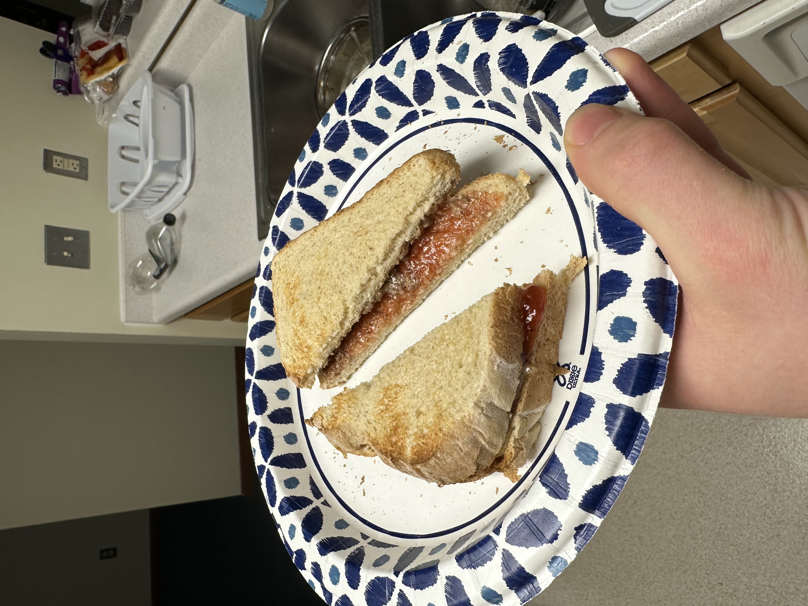

My Peanut Butter & Jelly Recipe

Description:
This is how I personally make my peanut butter and jelly sandwiches.
They are a nice snack and rarely fail to satisfy. Their only real
downside is that they are not very filling for the calories. Other than
that though they are a hood classic.
In today's recipe we will be actually making an almond butter
and jelly sandwich, because that's what I have an open jar of right now.
Without further ado, let's get into it.
Ingredients:
- 2 pieces sourdough bread
- 1-2 tablespoons almond butter
- 1-2 tablespoons Trenton's strawberry jam
Steps:
- Pop your bread in the toaster and get them nice and browned
- Once the toast pops up, toss em on a paper plate and get your spreads ready
- Using a spoon, spread an even coat of Trenton's jam onto one piece of toast
- Optionally wash the spoon off, before using it to spread a coat of almond butter onto
the other piece of toast
- Mate the two halves of the sandwich and set the assembled unit back on the plate
- Grab a big kife, and cut the sandwich on its diagonal
- Serve
Back